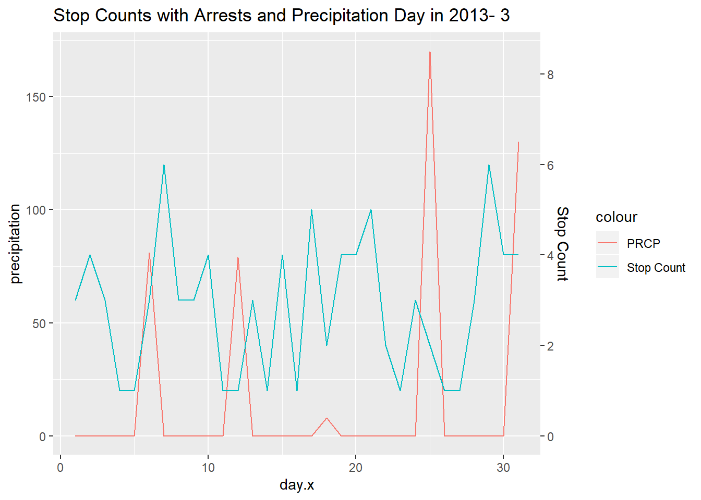

Chapter 7 Weather Overlayed with Traffic Stops
This section of exploratory data analysis sees if precipitation shows correlation with the amount of traffic stops per day. The expected correlation is that if it rains more there will be an increase in traffic stops because wet roads could lead to more reckless driving.
The Rnoaa package requires an API key, which can be acquired from the Rnoaa documentation
7.1 Visualizing Weather in Raleigh, North Carolina
In this example, we will overlay precipitation over traffic stops in Raleigh February.
In order to get weather data we must call the ncdc function. The key argument to keep in mind is the stationid argument. In order to find a city’s station ID you must go to this NOAA’s website https://www.ncdc.noaa.gov/cdo-web/search. Moreover, the type of data such as precipation, temperature, and snow etc is contingent on the station ID. For this example, we will look at precipitation only, but there is room to explore more variables to see in any affect traffic.
out <- ncdc(datasetid='GHCND', stationid='GHCND:USC00317079', datatypeid='PRCP', startdate = '2013-01-01', enddate = '2013-12-31', limit = 500)Now that we have the two datasets we must clean them because we will be joining them.
Here we use the lubridate package to make year, month, and day their own columns in the weather dataframe.
weather_df <- data.frame(out$data)
# fix weather_df dates
weather_df <- weather_df %>% mutate(clean_date = ymd_hms(date))
# make individual columns with year, month, & day
weather_df <- weather_df %>%
mutate(year = year(clean_date),
month = month(clean_date),
day = day(clean_date))Similarly, the raleigh dataset must also have year, month, and day in separate columns.
# use libridate to add clean date column for lubridate to interpret
raleigh <- raleigh %>% mutate(clean_date = ymd(date, tz = 'UTC'))
# use lubridate to add year, month, day columns
raleigh <- raleigh %>%
mutate(year = year(clean_date),
month = month(clean_date),
day = day(clean_date))Now that we have the two dataframes cleaned up, we can follow a sequence of piping commands to join and plot them.
# define month variable so we can easily plot different months
month_var = 3
title = paste("Stop Counts with Arrests and Precipitation Day in 2013-", paste(month_var))
# the pipe sequence below will examine a month in a year such that we count all the traffic
# stops that happened that day. Then, we plot the stop counts for a specific day and max temp in
raleigh %>%
# filter out raleigh entries in year 2013 and month variable
filter(year == 2013, month == month_var, arrest_made=="TRUE") %>%
# left_join by 'clean_date'
left_join(weather_df, by = c('clean_date'))%>%
# Group the data by day as this will be our shared x-axis
group_by(day.x) %>%
# count the number of stops per day and the precipitation value of that day
summarize(count = n(), precipitation=max(value)) %>%
ggplot() +
geom_line(aes(x=day.x, y= precipitation, color="PRCP")) +
geom_line(aes(x=day.x, y= count/.05, color = "Stop Count")) +
scale_y_continuous(sec.axis = sec_axis(~.*.05, name = "Stop Count")) +
ggtitle(title)
Based on the plot, it seems like precipitation in day does not impract the amount of stops. For example, the precipitation day 15 and 25 is relatively but stop count still fluctuates. Future analysis could look at the hourly level of stop counts and precipation or a year long look of precipiation and stop counts per day.